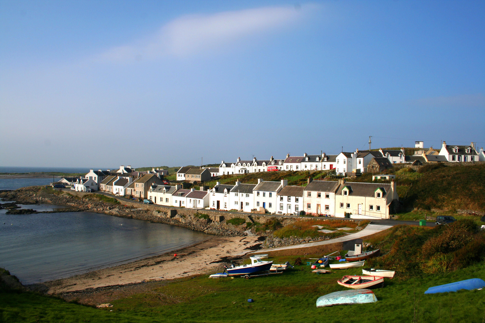
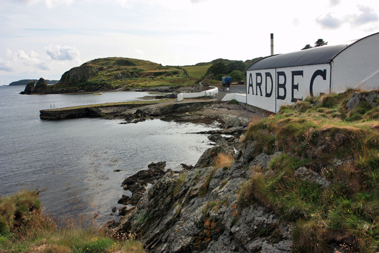
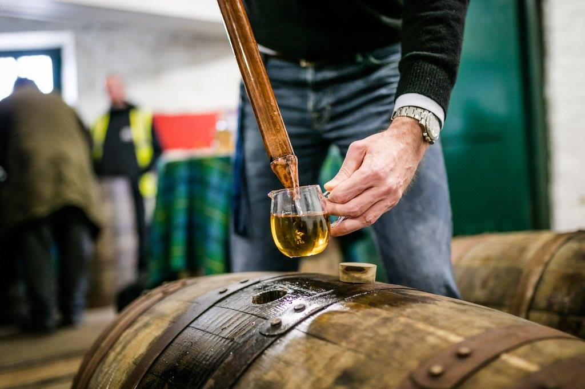
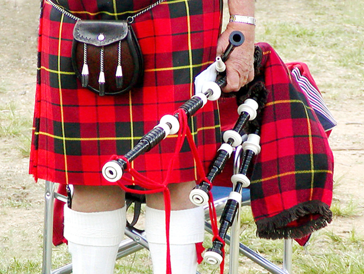
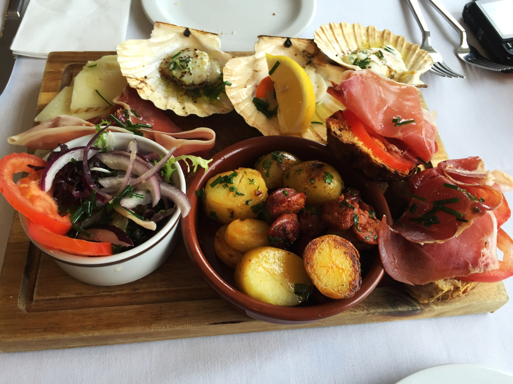
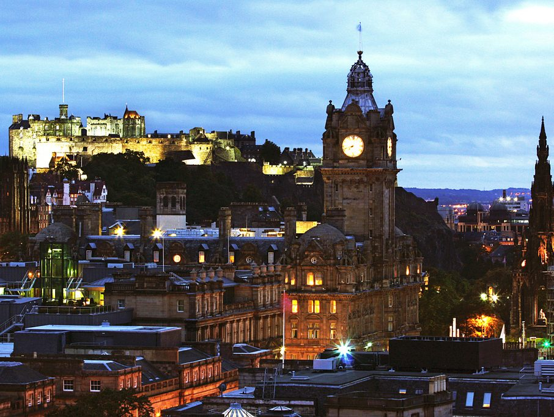

DEGUSTANDO WHISKY: THE ISLAY EXPERIENCE
NEM CURSO, NEM VIAGEM: AMBOS E MUITO MAIS
-
APRENDA
Conheça a cultura de um lugar paradisíaco e respire a emoção de aprender sobre whisky no coração do whisky escocês. Sinta, no dia a dia, a Islay que os livros apenas apresentam em fotos.
-
DEGUSTE
Sinta a preciosidade de exemplares raros e contagie-se pelos enigmas de sabores surpriendentes! Prove alguns dos mais incríveis whiskies, quem sabe direto do barril....
-
VIVA
Sinta o vento, o sol, a chuva, a terra, a cultura, as paisagens, as pessoas e os whiskies de Islay. Retorne com as malas cheias de histórias, whiskies e um certificado único: "The Islay Experience"
NADA DE TOUR BÁSICO: VIVA GRANDES EXPERIÊNCIAS
"Na Islay por onde o whisky chegou à Escócia... abra você mesmo o barril, colete o seu whisky, extraia turfa manualmente, sinta o malte germinando em suas mãos, ande no chão de maltagem, veja o forno por dentro... sinta o whisky sem filtros."
"Não espere o básico: tour básico, degustação básica, viagem básica. Islay, o paraíso dos amantes de whisky, vai lhe oferecer um novo significado para o termo "whisky". Viva uma verdadeira experiência: visitas premium, atividades especiais, aprendizado e degustações incomparáveis."
O QUE VOCÊ ENCONTRARÁ PELO CAMINHO...
-

Isle of Islay
Uma ilha, poucas cidades, notáveis destilarias, natureza exuberante, muita história e tradição! O paraíso dos apreciadores de whisky nos oferece […] -

9 Destilarias
Reunidas em uma ilha, destilarias repletas de história e tradição que representam algumas das mais importantes destilarias do mundo. Conheceremos […] -

Mínimo de 40 Whiskies
Muita coisa está inclusa no pacote, assim como 40 whiskies! No mínimo!! Tantos outros maravilhosos exemplares nos aguardam… Durante a […] -

Cultura
A Escócia de tantas histórias e tradição não poderia ser diferente: cultura, lendas, música, celtas, ruinas, a vida nos vilarejos, […] -

Culinária
Gosta de comida boa ou é vegetariano, a Escócia tem muito a oferecer! Haggies, black pudding, frutos do mar, cogumelos, […] -

Edinburgh
A capital de Escócia brilha e encanta. Depois de aprender muito sobre whisky, nada melhor que explorar essa cidade multicultural […]
CONHEÇA O ROTEIRO
Grupos partindo em 10/05/2018 e 14/06/2018
- Dia 1
Quinta-Feira
Embarque no Brasil. - Dia 2
Sexta-Feira
Reunidos em Glasgow, partiremos em van privativa percorrendo cenários estonteantes da região de Argyll & Bute. Parada para lanche e exploração em Luss, uma belíssima e charmosa vila de conservação às margens do Loch Lomond. Após, seguiremos até Kennacraig, de onde embarcaremos em balsa com destino a Islay. Momento de relaxar, aproveitar as paisagens e a estrutura da balsa. Chegaremos à Islay no início da noite, indo para acomodação. Noite livre para ambientação e descanso. - Dia 3
Sábado
Na manhã celebraremos o início da nossa experiência brindando com o premiado single malt Machir Bay na praia de Machir Bay, que deu nome a este whisky. Conheceremos as belezas dos arredores, além das ruínas da Kilchoman Church e o cemitério militar. Chegaremos à nossa primeira destilaria: Kilchoman Farm Distillery e aprenderemos em detalhes avançados o processo de produção de whisky desta destilaria-fazenda. Almoço (incluso) na própria destilaria. Iniciaremos a tarde com aprendendo com um historiador sobre a Ilha de Islay, no Islay Museum. Após visitaremos Islay Woollen Mill, um moinho de lã que produziu vestimentas para vários filmes de Hollywood. Conheceremos também a cervejaria da ilha: Islay Alles. Retornaremos à pousada e aprofundaremos nossos conhecimentos sobre whisky em descontraído brainstorm. Noite livre. - Dia 4
Domingo
Começaremos o dia esclarecendo dúvidas sobre o processo produtivo do whisky e então conheceremos com profundidade a Bunnahabhain Distillery. Almoço livre na cidade de Bowmore. À tarde partiremos para a gigante da ilha: Caol Ila Distillery. Além de conhecermos suas instalações, faremos uma degustação avançada em seus warehouses, com vários exemplares da destilaria, alguns muito exclusivos direto do barril. Exploraremos Finnlagan e sua importância histórica. Retorno à pousada. Final de dia e noite livres. - Dia 5
Segunda-Feira
Começaremos o dia na Bowmore Distillery, aprendendo sobre o processo produtivo e encerrando com degustação de exemplares especiais. Almoço livre na cidade de Bowmore. Em seguida partiremos de balsa para a ilha vizinha: Isle of Jura, onde conheceremos de forma premium a Jura Distillery. Faremos breve tour na ilha de Jura antes de retornar à Islay e à pousada. Noite livre. - Dia 6
Terça-Feira
Conheceremos de forma muito especial e profunda duas destilarias de Port Ellen. A primeira será a Lagavulin Distillery, com tour por suas instalações seguido de aula de degustação com a lenda Iain MacArthur. Provaremos whiskies realmente exclusivos. Almoçaremos no restaurante da Ardbeg Distillery. Após conhecer seu processo produtivo, degustaremos whiskies excepcionais coletados do barril, nos depósitos da destilaria. Finalizaremos o grande dia de degustações visitando ruínas celtas, como a Kildalton Cross e Kildalton Church, além de visitarmos a paradisíaca baía de Claggain Bay. Retorno à pousada e noite livre. - Dia 7
Quarta-Feira
Iniciaremos o dia na pitoresca e curiosa Bruichladdich Distillery onde teremos a oportunidade de degustar whiskies do barril. Após, partiremos para a Laphroaig Distillery para passar todo o restante do dia, colocando a “mão na massa” com atividades práticas. Entre as atividades, receberemos alimentação e doses de whisky (recompensas pelo esforço físico!). Finalizaremos com degustação de exemplares exclusivos do barril e poderemos coletar 250ml do barril preferido. Finalizaremos o dia celebrando em janta, com música tradicional, no restaurante do Port Charlotte Hotel (opcional, não incluso). - Dia 8
Quinta-Feira
Cedo, embarcaremos na balsa com destino ao continente. Café da manhã no restaurante da balsa, com vistas maravilhosas do mar, da ilha e possibilidade de avistar animais marinhos. Chegando em Kennacraig, partiremos em tour para Edinburgh. Parada em Inveraray para exploração e almoço livre. Visitaremos o Castelo de Inveraray e seguiremos por paisagens encantadoras até a chegada ao hotel em Edinburgh. Noite livre. - Dia 9
Sexta-Feira
Dia livre em Edinburgh. Caso deseje, podemos sugerir atividades e locais interessantes! - Dia 10
Sábado
Segundo dia livre em Edinburgh, com liberdade total para explorar a cidade. Quem desejar poderá começar retorno ao Brasil ou estender sua viagem. Fim dos trabalhos. - Dia 11
Domingo
Chegada no Brasil.
VALOR POR PESSOA: 2.370,00 £
Em acomodação double/twinIncluso no valor:
- Acompanhamento por especialista em todas as visitas do roteiro
- Material de apoio e apostila de estudos sobre whisky e Islay
- Transporte em van privativa, com motorista/guia, de Glasgow a Kennacraig e de Kennacraig a Edinburgh
- Transporte em van privativa, com motorista/guia local, em Islay e Jura
- 6 noites de hospedagem, com café da manhã, em pousada em Islay
- Aula e visitação no Islay Museum
- Entrada para atividades e degustações “premium” para todas as destilarias do roteiro (Ardbeg, Bowmore, Bruichladdich, Bunnahabhain, Caol Ila, Jura, Kilchoman, Lagavulin, Laphroaig)
- Almoço na destilaria Kilchoman
- Almoço na destilaria Ardbeg
- Almoço na destilaria Laphroaig
- Transporte de balsa (ida e de volta) para Isle of Jura
- Transporte de balsa (ida e de volta) entre Islay e Kennacraig
- Entrada para o Castelo de Inveraray
- 2 noites de hospedagem, com café da manhã, em Edinburgh em hotel 4 estrelas
- Impostos governamentais
Não incluso:
- Passagem de avião Brasil -> Escócia -> Brasil
- Seguro Viagem
- Gorjetas, Despesas pessoais
- Bebidas e Alimentação não declaradas no roteiro como inclusas.
- Transporte nos dias e períodos livres
- Excesso de bagagem
Formas de Pagamento
- Desconto de 5% para pagamento à vista (depósito, cheque)
- Parcelamentos com entrada de 30%
- Possibilidade de pagamento por Cartão de Crédito (custo adicional)
- Entre em contato!
OPÇÕES E SUGESTÕES
Ajuste e customize sua experiência!-
Adicione Seguro Viagem
O seguro viagem não está incluso, mas podemos incluí-lo! Vale lembrar que esse seguro é obrigatório para entrada na Europa.
Talvez você já tenha ele incluso em seu plano de saúde ou sua empresa ofereça a você gratuitamente, como benefício. Verifique e, se quiser, podemos incluir um seguro no seu pacote. -
Antecipe sua Viagem
O nosso pacote começa a partir de Glasgow, quando partiremos juntos para Islay. Entretanto, você pode antecipar sua ida a Glasgow e desfrutar desta maravilhosa cidade!
Caso queira, podemos auxiliar na escolha de vôos, hospedagem e indicações de atividades não apenas em Glasgow, mas por toda a Escócia! -
Estenda sua Viagem
Os últimos dois dias do pacote são livres, em Edinburgh! Mas talvez você queira aproveitar a oportunidade para estender por mais alguns dias a sua estadia na Escócia!
Podemos lhe ajudar na organização de alguns dias extras na sua viagem! -
Acomodação Single
Caso tenha preferência, pode-se optar pela privacidade de acomodação individual ("single").
Importante: depende da disponibilidade de vagas em Islay (pousada) e Edinburgh (hotel). Neste caso, haverá um acréscimo de valor de 800.00 £.